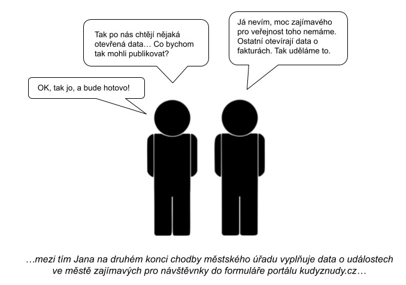

Publikační plán a publikace dat
online kurz
předpokládaná doba studia kurzu 2,5 hod.
Úvod do kurzu “Publikační plán a publikace dat”
Publikační plán – základní dokument, o který se opírá
systematické otevírání dat v organizaci (podívejte
se na ukázky vzorových publikačních plánů).
Tento kurz vás kompletně provede
tvorbou publikačního plánu včetně:
- představení rolí,
které se na jeho tvorbě podílejí,
- procesního pohledu na
problematiku,
- identifikace datových sad
pro publikaci jako OD,
- analýzy přínosů a rizik
publikace OD.
Proč otevírat data?
- Připomeňme si, jaké jsou hlavní přínosy otevírání dat…
- zvyšování transparentnosti
organizace,
- podpora snadného a opětovného
užití dat (ať už dalšími úřady či veřejností),
- poskytnutí příležitosti pro vývoj
užitečných aplikací třetími stranami nad těmito daty,
- dodržení zákonných povinností a
architektonických principů.
Další přínosy jsou uvedeny na Portálu pro poskytovatele otevřených dat.
Proč vytvářet publikační plán?
Publikační plán:
- umožňuje systematicky otevírat
data organizace,
- poskytuje informace o tom, které
datové sady organizace se budou otevírat – vzhledem k přínosům a
rizikům,
- stanovuje harmonogram
otevírání,
- obsahuje základní
charakteristiky (metadata) k datovým sadám – jaké budou
podmínky jejich užití a kdo bude za sady odpovídat,
- odráží stav dat vedených v IT systémech organizace z perspektivy otevřených dat.
Otevírání dat bez publikačního plánu
Pokud organizace otevírají data bez publikačního plánu,
dochází k následujícím situacím:
- Otevírání dat se děje nesystematicky či
ad-hoc.
- Potenciální uživatelé neví, jaké datové
sady organizace otevře a kdy.
- Uvnitř organizace není jasné, u kterých
datových sad převažují přínosy jejich otevření nad riziky.
- V organizaci není zřejmé, kdy a jaké
zdroje je potřeba na otevírání datových sad alokovat.
Otevírání dat bez publikačního plánu v praxi
